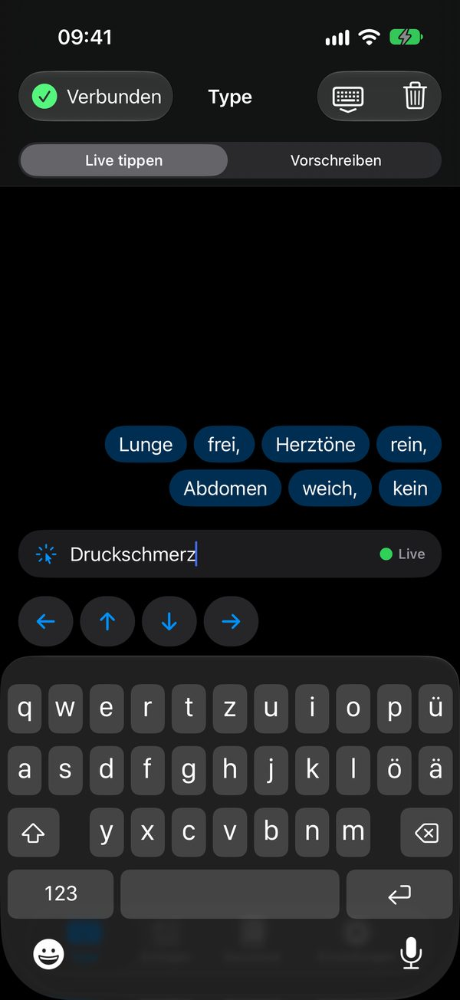
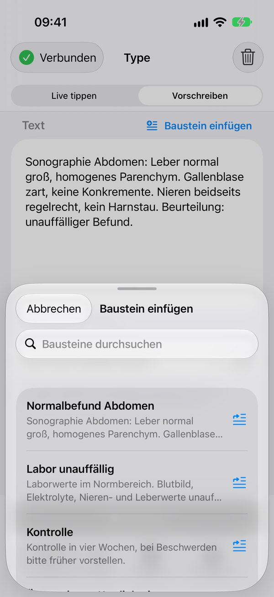
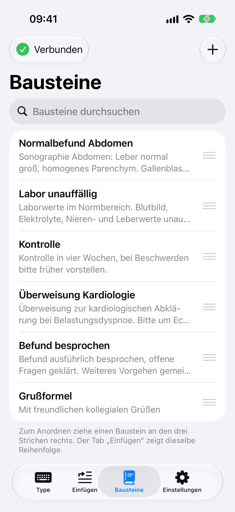
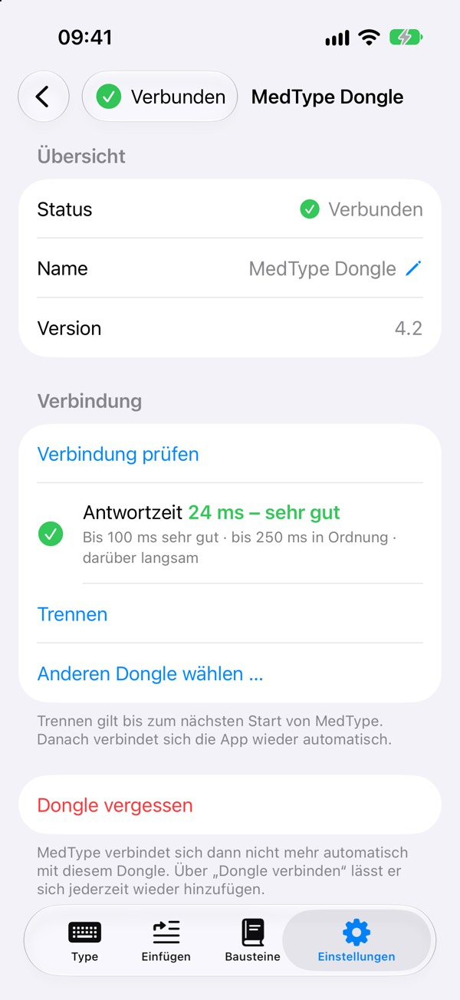
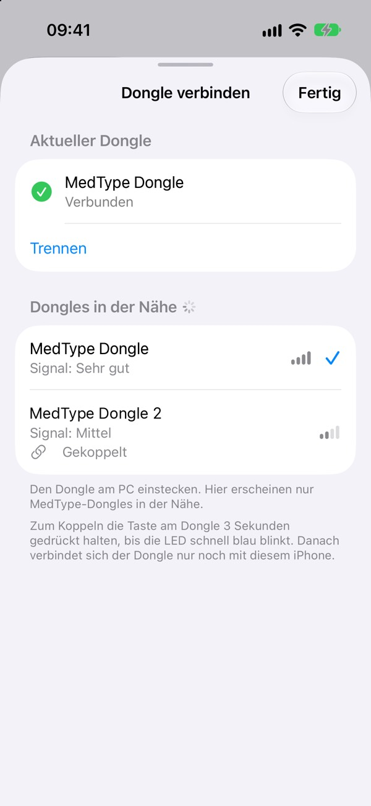

Vom Einstecken bis zum ersten Text
- 1Daten
- 2Notizen
- 3Verlauf
- 4Übergabe
- 5Abschluss
Notizen
Freitext
Hallo vom Smartphone!
Dieser Text erscheint dort, wo der Cursor steht.Text schreiben, einfügen oder diktieren
70 Zeichen · ca. 3 Sek.0 Zeichen
Nach dem Senden leeren
Text wird getippt
70 von 70 Zeichen
Fertig getipptDer Text steht jetzt auf dem PC.
-
Dongle in den PC stecken
Der MedType-Dongle meldet sich am Windows-PC wie eine normale USB-Tastatur. Eine Installation ist dort nicht nötig.
LED blinkt langsam blau: bereit
-
Smartphone koppeln
Die Taste am Dongle 3 Sekunden halten, in MedType den Dongle wählen und die Kopplung bestätigen. Das ist nur einmal nötig – danach verbindet sich MedType von selbst. Alle Schritte in der Hilfe.
LED blinkt schnell blau: Koppelmodus
-
Tippen
Am PC das Zielfeld anklicken und in MedType schreiben. Der Text erscheint genau dort, wo der Cursor steht.
LED grün: verbunden, flackert beim Tippen

Tab Type › Live tippen
Jeder Tastendruck geht sofort an den PC
Im Modus „Live tippen“ landet jede Eingabe sofort am PC-Cursor. Löschen und Enter wirken direkt dort, und die Pfeiltasten über der Tastatur bewegen den Cursor. Fertige Wörter rücken in einen Verlauf über der Eingabezeile. So bleibt das zuletzt Getippte lesbar, ohne zum PC zu schauen.
Auch Diktieren ist möglich: Was über das Mikrofon der Bildschirmtastatur diktiert wird, tippt MedType direkt am PC.

Tab Type › Vorschreiben
Erst im Entwurf, dann am PC
Der Text entsteht zuerst nur in der App und lässt sich dort korrigieren oder diktieren. Mit „Baustein einfügen“ landen gespeicherte Texte an der Cursorposition im Entwurf.
Am PC getippt wird erst nach „Senden“. MedType zeigt dabei den Fortschritt, und „Abbrechen“ hält das Tippen an; was bis dahin getippt ist, bleibt am PC stehen. Danach ist der Entwurf leer, sofern „Nach dem Senden leeren“ eingeschaltet ist.

Tab Bausteine · Tab Einfügen
Häufige Sätze als Baustein
Häufige Texte wie ein Normalbefund, eine Grußformel oder eine Adresse werden einmal als Baustein gespeichert. Im Tab „Einfügen“ genügt dann ein Tipp, und der Dongle gibt den ganzen Text am PC ein.
Die Suche prüft Titel und Text. Die Reihenfolge wird durch Ziehen festgelegt und gilt in allen Listen.


Einstellungen › Dongle
Ein Dongle pro PC
Gekoppelt wird einmal per Tastendruck am Dongle, danach verbindet sich MedType beim Start von selbst. „Verbindung prüfen“ misst die Antwortzeit des Dongles: Bis 100 ms gilt sie als sehr gut, bis 250 ms als in Ordnung.
Jeder Dongle kann einen eigenen Namen erhalten, zum Beispiel „PC 1“ oder „Laptop“. Nicht mehr benötigte Dongles lassen sich mit „Dongle vergessen“ aus der App entfernen. Neue Dongle-Software kommt künftig mit einem App-Update und wird per Bluetooth aufgespielt; der Dongle bleibt dabei am PC.
Im Detail
- Tippgeschwindigkeit. 5 bis 250 Zeichen pro Sekunde, voreingestellt 30; bei Remote Desktop und Citrix höchstens 30.
- Pause nach Zeilenumbruch. Für Programme, die nach Enter einen Moment brauchen.
- App-Icon. Leuchtrot, Warnweste, Nachtschicht oder Blaulicht.
- Hell und dunkel. Im Hoch- und Querformat, mit VoiceOver bedienbar.
- Demo-Modus. Zum Ausprobieren ohne Dongle.
Datenschutz
Der Weg des Textes
- Auf dem Gerät. Bausteine und Entwurf liegen in einer Datenbank der App auf dem Gerät, ohne Abgleich mit iCloud. MedType hat keinen Server und braucht kein Internet.
- Zum Dongle. Per Bluetooth, verschlüsselt. Nach dem Koppeln nimmt der Dongle nur noch dieses Gerät an; er hält den Text nur kurz im Arbeitsspeicher und speichert keine Texte dauerhaft.
- Am PC. Der Text landet in dem Programm, in dem der Cursor steht.
Werbung, Tracking oder Analysedienste enthält die App nicht, und der Anbieter erhält keine geschriebenen Inhalte.
Was gebraucht wird
- Smartphone oder Tablet
- iOS bzw. iPadOS 17 oder neuer, Bluetooth eingeschaltet.
- MedType-Dongle
- Steckt direkt am PC. Anfrage an store@medtype.de.
- Windows-PC
- Tastaturbelegung Deutsch (Deutschland), QWERTZ. Keine Installation, Bluetooth braucht der PC nicht.
- Ohne Dongle
- Demo-Modus unter Einstellungen › Demo-Modus.
Ein Konto, WLAN oder Internet braucht MedType nicht. Voraussetzungen in der Hilfe
Kontakt
Fragen zu MedType werden per E-Mail beantwortet.
- Fragen und Hilfe
- support@medtype.de
- Dongle anfragen
- store@medtype.de
Viele Antworten stehen schon in der Hilfe. Keine vertraulichen oder personenbezogenen Daten senden, auch nicht in Bildschirmfotos.